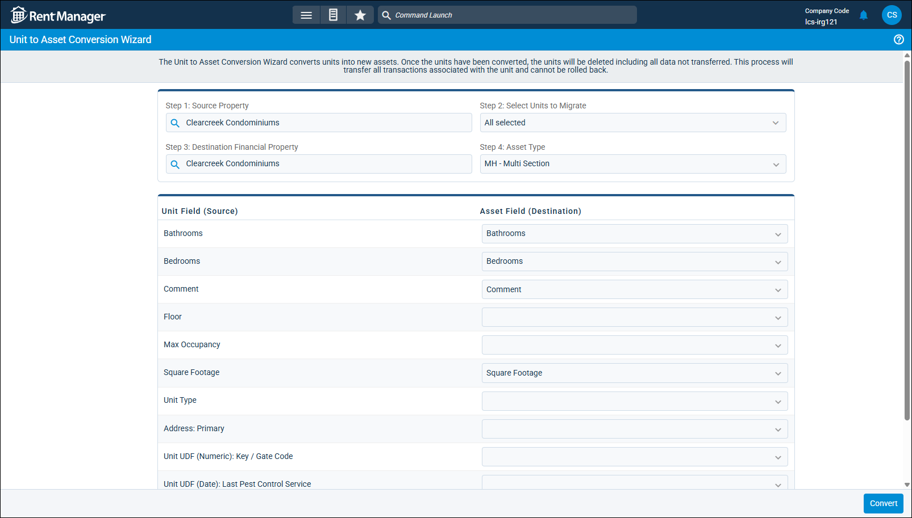

Source: https://rmxhelp.rentmanager.com/Topics/Express/Other/Assets-Unit-Conversion-Wizard.htm
Unit to Asset Conversion Wizard
Assets are higher-value items that can be moved between properties and can be rented, such as appliances, furniture, and manufactured homes. By converting units to assets, you can track the assets' maintenance details, depreciation schedules, and secondary leases, and you can generate asset-specific reports that are separate from your units, inventory items, and other rentable items. You can also link assets to units, such as setting a manufactured home asset's location to a lot unit.
If you have previously created units in Rent Manager that are better suited as assets (such as manufactured homes), you can use the Unit to Asset Conversion Wizard to convert these units into assets and transfer their information into the appropriate asset fields.
Warning
The conversion process deletes the original units and cannot be undone. Ensure that all information is correct before completing the conversion. Additionally, the following unit-specific information is not transferred to the converted asset records because it is not applicable to assets in Rent Manager:
-
Unit Statuses
-
Linked Assets
-
Security Deposit Information
-
Past Tenants
-
Amenities
Related Privileges
| Group | Privilege | Column |
|---|---|---|
| Asset Management | Unit to Asset Conversion Wizard | Enabled |
For more information, refer to Control User Access.
Before converting your units to assets, you must first ensure the following asset components are set up in Rent Manager:
| Component | Description |
|---|---|
|
Asset Types |
Create different categories to identify the types of assets you have, such as Dishwasher, Couch, Manufactured Home, and so on. For more information, refer to Asset Types (Page). |
|
Asset User Defined Fields |
Asset-type user defined fields (UDFs) allow you to track information about assets that Rent Manager does not track by default. If there is unit-specific information that you wish to retain on the asset after conversion but there is not a suitable field to transfer the information to, you can create a UDF for it. For more information, refer to Add a User Defined Field. |
Step 1: Select Units to Convert
You can convert assets from one property at a time into one asset type at a time. For example, if you are converting multiple manufactured home units at the same property into assets, but you have multiple asset types for the different types of manufactured homes, you must run the conversion wizard separately for each asset type.
Warning
When converting units to assets, the unit Name becomes the asset Name. Because assets can be moved between different properties, all assets must have unique names. If you convert a unit with same name as an existing asset, you receive an error that the unit could not be converted. To resolve this error, update the name of the unit and then try the conversion again.
To convert units to assets, do the following:
-
Go to
 arrow_forward Rental Info arrow_forward
arrow_forward Rental Info arrow_forward  Rental Info Setup arrow_forward Assets arrow_forward Unit to Asset Conversion Wizard.
Rental Info Setup arrow_forward Assets arrow_forward Unit to Asset Conversion Wizard.
-
In the Step 1: Source Property field, select the property of the units you are converting to assets.
-
In the Step 2: Select Units to Migrate field, select each unit that you are converting into the same type of asset.
-
In the Step 3: Destination Financial Property field, select the property to use for tracking the assets' financial information.
More Information
All financial records attached to the selected units are migrated to this property. In most cases, the source property and destination property are the same. If the asset moves between different physical properties, this information can be tracked using the asset locations, but the financial property should not change. For more information, refer to Asset Locations (Pop-Up).
-
In the Step 4: Asset Type field, select the type of asset all selected units will be converted to.
Step 2: Assign Fields to Transfer Information
After selecting which units to convert to assets, you must designate the asset field(s) where unit field information is transferred. If there is unit information you wish to track that does not have an asset field by default, you can map that field to an asset-type user defined field (UDF).
To assign which asset fields to transfer unit information to, do the following:
-
In the Asset Field (Destination) column, click the drop-down for each unit field listed in the Unit Field (Source) column and select the asset field where the unit field's value is transferred. The unit fields and the most commonly selected asset fields for each are described in the table below.
Unit Field (Source) Description Bathrooms
The number of bathrooms the home-type asset has.
This information is transferred only if the asset type selected in Step 4: Asset Type has the option Assets of this time are homes checked.
Bedrooms
The number of bathrooms the home-type asset has.
This information is transferred only if the asset type selected in Step 4: Asset Type has the option Assets of this time are homes checked.
Comment
An additional note or information regarding the asset.
Floor
Most assets do not have multiple floors, so in most cases, this selection would remain blank. If the asset does have multiple floors, you can create an asset-type user defined field to track this information and select that UDF.
Max Occupancy
If you would like to track the maximum occupancy allowed for a home-type asset, you can create an asset-type user defined field to track this information.
Square Footage
The size of the home-type asset in square feet.
This information is transferred only if the asset type selected in Step 4: Asset Type has the option Assets of this time are homes checked.
Unit Type
In most cases, this information is not relevant to assets since the assets have their own type classifications.
If you would like to retain this information for historical purposes, you can create an asset-type user defined field.
Address: Primary
In most cases, you would track an asset's address based on the unit selected for the asset's location. Asset location information is established from the asset's details page after conversion. For more information, refer to Asset Locations (Pop-Up).
If you would like to retain this information for historical purposes, you can create an asset-type user defined field.
Unit UDFs
You can create asset-type user defined fields for each unit UDF you wish to continue tracking on your converted assets and assign them accordingly.
-
Click Convert.
-
On the Warning pop-up, read the disclaimer and click Yes if all information entered is correct.
The conversion wizard processes. When complete, the Complete pop-up displays. -
Click OK on the pop-up.
All selected units are converted to the selected asset type.